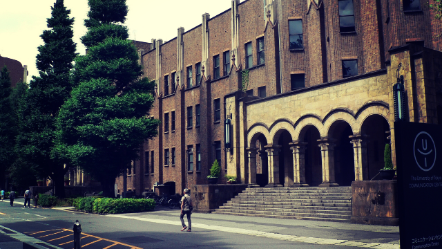

なぜ大学に行くのか
今日は、このテーマで考えてみたいと思います。
そもそも人はなぜ大学を目指すのか。なぜ最高学府である大学へ行きたがるのか。
30年以上塾講師をしていて、多くの生徒や保護者から進路についての相談を受けてきましたが、皆さん「大学進学」は当然の前提として話されます。
高校選びも必然的に大学進学に有利かどうかを基準に考えます。
なので難関といわれる大学に多くの合格者を送り込んでいる「実績」が、高校選びの重要なファクターであり、そのような実績のある高校もまた難関校として受験者の人気を集める。
あまりにも当たり前の常識かもしれませんが、大学進学が前提である以上そうならざるを得ません。
さて、そこでまた最初の問いに戻ります。
なぜ多くの人は当然のように大学を目指すのでしょうか。そんなに皆さん勉強が好きなのでしょうか？
世間の人：そりゃあ、今どき大学くらい出ていないと就職口にも困るし、待遇だって高卒とは違うからね。
私：じゃ、大学は有利な待遇を求めて行くところなわけですね。
世間の人：まっ、それだけじゃないけどやっぱりある程度の専門知識は得られるだろうし、第一大学くらい出てないと好きな職種も選べない。
私：やっぱ就職のためが重要なんだ。
世間の人：そりゃそうでしょ。この不景気な時代、少しでも有利な働き口見っけないと良い暮らしできない。
この問答で分かることは2つです。
1つは、大学は勉強しに行くというより就職など将来の有利な条件を得るためという認識。
もう1つは「今どき大学くらい出てないと」という言葉から分かるように、皆が行くから自分だけ行かないわけにはいかない。自分だけ損するのはイヤという、落ちこぼれ回避の動機。
これが大きいということです。
大卒がエリートだった時代はとっくの昔
ここで私は「大学は勉強する所だ！ 勉強する気もないのに有利か不利かで大学を選ぶな」などと、ヤボなことを言うつもりはありません。
確かに皆が高等教育を受けられる時代というのは幸せなことではあります。
かつてのように、教育を受けたくても経済的理由や、親の無理解によって進学を泣く泣く断念する者が大半だった時代に比べたら、今はずっと良い時代と言えるでしょう。
ちなみに高等小学校しか出ていない私の母親などは、いつも「自分は勉強が好きだったのに家が貧しくて女学校に行けなかった！ それがずっと悔しくて…」と愚痴ってました。
さらに「自分よりはるかに成績の悪い同級生が女学校に行けて、自分は働きに出るしかないのが理不尽」と嘆き「その点あんたは幸せだよ。親が大学まで出してやると言ってるんだから。」と続き最後はお説教で終わります。
私は母のこのような繰り言（お説教）を聞かされて育ったのです。
まっ、戦前生まれの人たちは大体同じような環境で育ち「子どもにだけは学歴をつけさせたい」という気持ちが強かった。
この人たちの学歴に対する怨念が、戦後の大学進学熱を支えた一因でもあると思います。
こうして1955年は7.9％だった大学進学率は、2009年に50％を超え今では2人に1人が大学に行く時代となりました。
このように全体が高学歴化し、国民の平均レベルは上がり、特に高度成長を支える原動力にもなったのです。
資源に恵まれない日本が、現在のような先進国としての繁栄を享受できるのも人材たる国民のマンパワーによるところ大だと思います。
かくして皆が高等教育を受ける、皆が大学へ行くということは、個人レベルでは少しでも有利な生活条件を手に入れるためであり、国レベルでも発展繁栄に資するものだったということです。
しかし、時代は変わり社会構造も変化します。
めでたしめでたし。これで一件落着(笑)といかないところが難しいとこであります。
大学へ行く意味を今こそ問う
昔は大学出が圧倒的に少なかったので、大学出は文句なしのエリートと言えたと思います。
「末は博士か大臣か」という言葉があったくらい、大学出は将来を嘱望されたものです。
今は「石を投げれば大学出に当る！」というほど大卒は珍しくない。すでに私が学生の頃「駅弁大学」とか「大学はレジャーランド」と言われたものです。
（ちなみに「駅弁大学」とは駅弁のように各駅に存在していて誰でも入れる大学を揶揄した言葉です。死語ですが…）
要するに大学生はとっくにエリートとは見なされなくなった。大学に入ってもバイトに明け暮れ遊んでいるばかりで、ロクに勉強もしないというのが社会通念になっている。
つまりこういうことです、
2人に1人が大学生ということは、大学生全体の平均レベルは落ちている。また問題はこれだけではなく、社会の進歩によって大学で習う専門知識も昔のように最先端ではなく、かえって企業や政府系の研究機関の方が高度になっている。
理系の学生などは、最低でも大学院に行かなければ就職もおぼつかないのはすでに常識です。
社会構造はこの20年間で劇的に変動しました。
昔のようにどの企業も同じような製品を、大量生産していれば良い時代ではなくなったのです。モノづくりが最重要の時代は終わりを迎え、経済成長もかつてのような大幅な伸展は望めなくなりました。
今や、かつてのように何でも欧米先進国のモノマネで済む時代ではない。
企画力や創造力そしてコミュニケーション能力、まったく新しいサービスを生み出す発想力が必要となりました。
モノではなく新しい価値こそが商品の時代の到来です。
さらにはどの分野においても、人を育てたりまとめたりするリーダーシップある人材が求められています。
要するに人間力こそが問われる時代になった
大学で教わる勉強内容自体も問われているのです。大学自体も変わらざるを得ない局面に立たされています。
かつては大学卒業の証明書だけで社会的信用を得ることが可能であり、大学出がいろいろな意味で有利であったことは間違いありません。大学を出ただけで有利と言う時代ではないのです。
皆が大学へ行くということは、大学を出たところで大部分の人はかつては大学へ行かなくても就けた仕事にしか就けていないということです。
逆に人間力そのものがズバ抜けて優秀であれば、大学へ行かなくても有利な条件を手にすることもできるのです。
私はよく冗談交じりに言います。「特別才能に恵まれた者は大学に行かなくても良い。特別な才のない凡人は大学へ行くのがよい」と。
しかしこれは冗談ではなくなりつつあります。
実際にこういう現象は起こっているのです。
才能あるものは海外に出て、早くから世界を相手に活躍し自分を磨きながら成果を上げていく。また。小→中→高→大と直線的にレールの上を進むのではなく途中でドロップアウトして働いたり、色々考えたり様々な経験を経て再び大学に戻って勉強しキャリアを重ねていく。そのような柔軟な道を歩む人が増えていくでしょう。
たとえ普通に大学へ進んでも、大学時代にどれだけ自分のスキルを磨き人間力を高めたか、つまり勉強し経験を積んだかが問われるでしょう。要するに大学でこそ人間力を養うべきだということです。
ただ、大学に入りさえすればソコソコ有利な人生を歩めるという牧歌的な時代は完全に終焉を迎えました。
それがたとえ有名大学、難関大学であったとしてもです。
逆に言えば無名大学だろうと入ってから力をつけた者が社会的に成功するということです。だから大学に入るため－入試のため－に多大なエネルギーを使うのは無駄だと言えます。
ちなみに現在の大学入試は、以前のように膨大な知識を詰め込まなければならない形式から多様な思考や深い洞察力を論述するものへとシフトしつつあります。
高校生段階から主体的に考える習慣を身につける必要があるということです。
なので受験勉強も予備校などでひたすら詰め込み、暗記作業にエネルギーを費やすのではなく、対話形式などを取り入れた主体的かつ楽しく学ぶ学習法が主流になるでしょう。
高校におけるアクティブラーニング、アメリカのようにオンラインでの、優秀なアドバイザーによる、双方向的な問答形式が今後は大学受験突破への必須学習法になると思います。
今やかつてのように知識は豊富だが、受験でエネルギーを消耗し自力思考が苦手な学生を量産することは国の将来を危うくしかねない。
そのことを良く知り、今もっとも危機感を持っているのが東京大学だとうことが、このことを象徴していると思います。
今こそ大学へ行くことの意味そのものを各自が考えるべきときに来ている。そう思うのです。
エンライテックの詳細を見る ＞＞